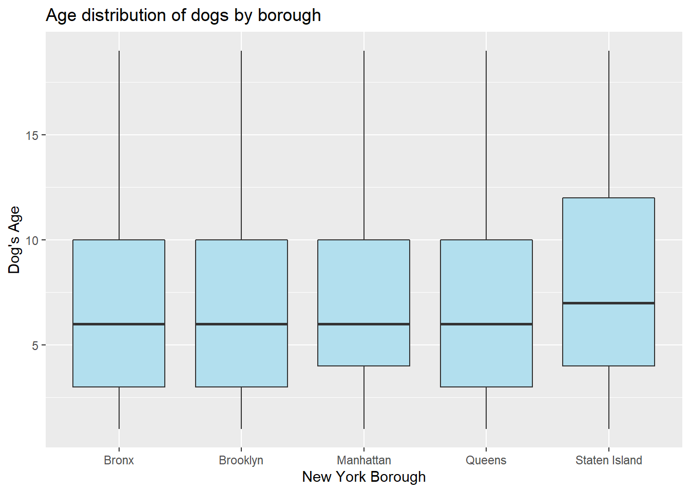

Analysis of Dogs Licensed in New York City
This is an analysis conducted on the NYC Dog Licensing dataset. All dog owners who reside in NYC are required by law to license their dogs. This is a publicly available dataset sourced from the Department of Health and Mental Hygiene (DOHMH) Dog Licensing System where owners are able to apply for and renew dog licenses. This dataset was created on September 19, 2017 and was last updated on July 25, 2019. There are 10 variables in this dataset with a raw number of 346,000 observations.
This dataset was cleaned and tidied in a variety of ways. Dog breed names were standardized (ie: Australian Cattle Dog vs Australian Cattledog) and zip codes were matched to boroughs. Records were dropped if the dog breed was listed as ‘unknown’ or blank, as well as records of dogs who were over 20 years old, assuming these dogs were unlikely to still be alive. An subdataset was also created of only distinct dogs, as the primary dataset had multiple entries per dog if a dog’s license was renewed.
The following plot explores gender of dogs by borough. This chart shows us not only that the greatest number of dogs are in Manhattan followed by Brooklyn, but that male dogs are perferred over female dogs in every borough. In all of the city there are over 13,000 more male dogs than female dogs.
| Males | Females |
|---|---|
| 69506 | 55882 |
The following plot shows age distribution of dogs by borough. The majorty of dogs are between 3 and 10 years old, with a median age of 6 and mean age of 7 years. Dogs tend to be slightly older in Staten Island, with an average age of 7.9 years.

| borough | Avg. dog age |
|---|---|
| Bronx | 6.68 |
| Brooklyn | 6.74 |
| Manhattan | 7.19 |
| Queens | 7.13 |
| Staten Island | 7.90 |
There was a large uptick in dog licensing in 2016 and 2017. Across all years licensing was highest in the summer, peaking in July.

For a bit of fun, let’s look at top name by birth year to see what the trendy dogs were called. We looked at the most popular name each year from 2000 to 2018. We found that most names were popular for multiple years, which the exception of ‘Princess’, ‘Lucy’, and ‘Lola’. Some names saw resurrgences years later, with ‘Coco’ topping the charts in 2000 and resurfacing again as champion in 2006. ‘Bella’ too made a comeback, with a number one spot in 2004, and reemerging as the dominate name in 2009, 10, and 11. The more modern surge could be attributed to the Twilight movies which premiered in 2008-2012, but that is merely a conjecture. However the classic ‘Charlie’ is the enduring winner, being the most popular dog name in 6 different years. ‘Charlie’ debuted in 2007 and maintained a steady dynasty from 2012 to 2016, only to be toppled by a downward trending ‘Luna’ in 2017.